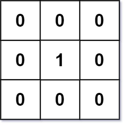
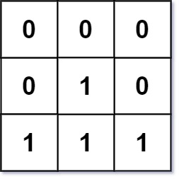

542. 01 矩阵
多源 BFS：把所有 0 当起点一起入队向外扩层，某格第一次被到时就是它到最近 0 的距离。
思路
- 不是对每个 1 都去做一次 BFS，而是反过来：所有 0 同时入队当超水源。
- 队列里按层扩展：第 k 层出队的格子，其未访问邻居的距离就是
k + 1。 - 用
dist = -1标记未访问，兼当「别重复入队」的判断。 - 一格只入队一次，总时间 O(mn)。
图解
最优解
1import java.util.*;2 3class Solution {4 public int[][] updateMatrix(int[][] mat) {5 int m = mat.length, n = mat[0].length;6 int[][] dist = new int[m][n];7 Deque<int[]> q = new ArrayDeque<>();8 for (int i = 0; i < m; i++) {9 for (int j = 0; j < n; j++) {10 if (mat[i][j] == 0) q.offer(new int[]{i, j}); // 所有 0 都是源头，距离 011 else dist[i][j] = -1; // -1 表示还没算出来12 }13 }14 // 多源 BFS：所有 0 一起向外扩层，先被到的格子离 0 最近15 int[] dr = {1, -1, 0, 0}, dc = {0, 0, 1, -1};16 while (!q.isEmpty()) {17 int[] cur = q.poll();18 for (int d = 0; d < 4; d++) {19 int nr = cur[0] + dr[d], nc = cur[1] + dc[d];20 if (nr < 0 || nr >= m || nc < 0 || nc >= n || dist[nr][nc] != -1) continue;21 dist[nr][nc] = dist[cur[0]][cur[1]] + 1;22 q.offer(new int[]{nr, nc});23 }24 }25 return dist;26 }27}题目
给定一个由 0 和 1 组成的矩阵 mat ，请输出一个大小相同的矩阵，其中每一个格子是 mat 中对应位置元素到最近的 0 的距离。
两个相邻元素间的距离为 1 。
示例 1：

输入：mat =[[0,0,0],[0,1,0],[0,0,0]] 输出：[[0,0,0],[0,1,0],[0,0,0]]
示例 2：

输入：mat = [[0,0,0],[0,1,0],[1,1,1]] 输出：[[0,0,0],[0,1,0],[1,2,1]]
提示：
m == mat.lengthn == mat[i].length1 <= m, n <= 1041 <= m * n <= 104mat[i][j] is either 0 or 1.mat中至少有一个0
题面取自力扣当前版本。
数据快照 2026-11-04。题面版权归力扣所有，本站点仅供本人学习使用，请勿对外发布。